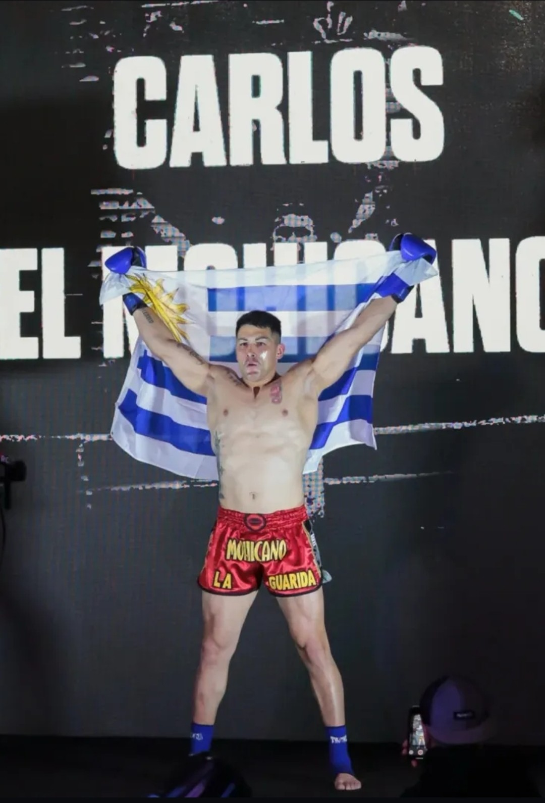
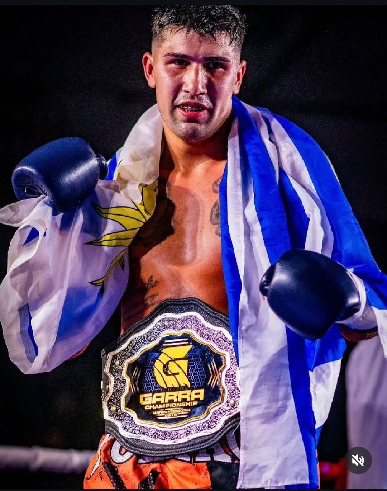

Carlos "El Mohicano" De lo Santos

El Mohicano es un peleador con una trayectoria marcada por la experiencia real en combate. Ha enfrentado y vencido a grandes referentes del deporte en Uruguay, y ha llevado su nivel a plano internacional compitiendo en escenarios como el WGP en Brasil.
Dentro del ring, su estilo es claro: presion constante, agresividad inteligente y una técnica que respalda cada intercambio. No pelea por pelear, pelea para dominar.
Fuera del ring mantiene una mentalidad de crecimiento continuo. Está en constante formación, perfeccionando su nivel para transmitir en cada clase lo que realmente funciona cuando se pelea de verdad.
Danilo "El Cuqui" De los Santos

El Cuqui es un pelador profesional consolidado y actual campeón del Garra Championship. Su carrera incluye combates de alto nivel tanto en Uruguay como en el exterior, enfrentando rivales en Argentina y Brasil.
Se caracteriza por un estilo técnico, preciso y efectivo. Sabe leer la pelea, elegir los momentos y ejecutar con claridad. Pero cuando hay que ir al frente, también responde: le gusta el intercambio y no retrocede.
Su experiencia no es teórica. Es práctica, vivida y comprobada en el ring, lo que se refleja directamente en la calidad de sus clases.
LA GUARIDA
En La Guarida no entrenás con improvisados,entrenás con peleadores activos, con experiencia nacional e internacional, que saben lo que enseñan porque lo viven y aplican en combate.
En La Guarida, no solo se entrena el físico: Se forja carácter,disciplina y una mentalidad capaz de superarse dentro y fuera del ring.
Si querés aprender de verdad, exigirte y llevar tu nivel a otro plano, este es tu lugar.